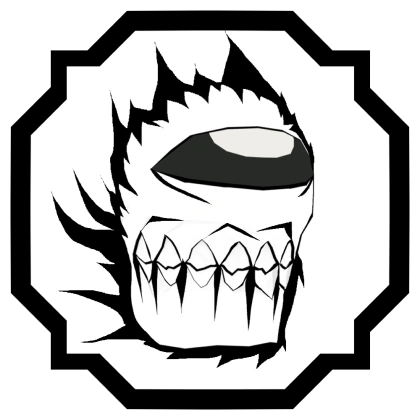

Para empezar, explicaré de que va el juego.
Shinobi Life 2 es un RPG de mundo abierto donde tiene ciertas caracterñiticas de otros animes pero esta principalmente enfocado en Naruto.
Dada la explicación comenzaremos a nombrar algunos de las mejores cadenas de sangre.
1.AIZEN
|  |
Esta cadena de sangre es la mejor cadena de sangre obtenible en el juego debido a su versatilidad y potencial de combo que tiene.
Las características que tiene son:
- Primer ataque: tira una esfera y si le da al enemigo lo atrae, hace un daño bajo y es blockbraker.
- Segundo ataque: es un ataque tipo AOE que tira rayos alrededor del portador que hace un daño decente.
- Tercer ataque: es otro ataque de tipo AOE que crea un area que hace un daño decente y estunea a los enemigos.
Modo
Primera fase: el E spec es una bola que crea una mini tormenta alrededor del jugador afectado con un daño bajo; el Q spec es un combo extender que va hacia el oponente y hace un daño alto; el C spec summonea a la bestia de la máscara y ataca a cualquier oponente. Segunda fase: el E spec hace lo mismo que el de la primera forma; el M1 en vez de ser normal lo hace con la bestia; el C spec summonea a la bestia y tira una ráfaga de bolas haciedo un daño alto; el Q spec te convierte el la bestia misma.
|